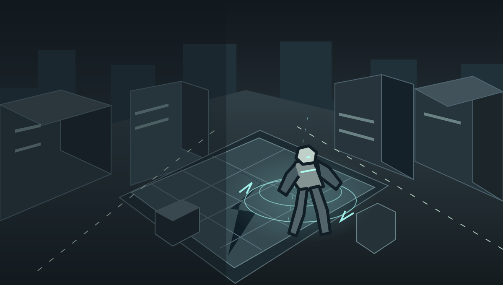

Local combat beta · 0.1
FRACTURE
ONLINE BATTLEGROUNDS
Gravity is yours to command.
Make every hit count.
Training runs in your browser. Public battles and private room codes aren’t connected yet.
Desktop keyboard and mouse recommended. No installation needed.
An original battleground
Direction is everything.
FRACTURE is built around quick movement, readable attacks and a four-hit melee chain. Start in Meridian’s training plaza: move, dash and use gravity to control the dummy and break marked props.
VECTOR
An original directional-force fighter. Four base abilities, Vector Shift and a temporary awakening set.
Training first
Learn your range and timings. Damage, hits, combo damage and DPS come from your actual attacks, not an invented score.
Your revision stays yours
Game graphics, audio, pins and recent play are device-only and separate from revision accounts, badges, progress and drawings.
Learn the rhythm
Controls
Click the arena to capture your mouse. If your browser won’t allow capture, drag on the arena to turn the camera. Escape opens the menu.
- WASD
- Move relative to the camera
- Mouse
- Look around
- Left click
- Basic attack · four-hit combo
- Space
- Jump
- Shift
- Sprint
- Q
- Dash
- F
- Hold to block
- R
- Vector Shift
- 1–4
- Character abilities
- G
- Awaken when the meter is full
- Esc
- Pause / menu
Development notes
The first arena
Version 0.1 is the local training vertical slice. This is not yet an online multiplayer release. Public matchmaking, private codes and additional original characters remain part of the full goal.
Bloom and motion blur are not implemented in this version. Low graphics reduces resolution, shadows and particle effects for weaker PCs. Your school or browser may restrict WebGL or mouse capture; this app does not bypass those restrictions.
FRACTURE
Preparing your arena
Loading game engine…
The map, character, animations and effects load only when you launch.
The arena couldn’t start
Q · Dash ready R · Vector Shift ready
WASD move · Left click attack · Space jump · Shift sprint · Q dash · F block · 1–4 abilities · R shift · G awaken